Kinetics – thermolib.kinetics
Rate constant – thermolib.kinetics.rate
- class thermolib.kinetics.rate.BaseRateFactor(CV, CV_TS_lims, temp, CV_unit='au')[source]
An abstract class for inheriting child classes to compute the prefactor
 required for the computation of the rate constant of the process of crossing a transition state:
required for the computation of the rate constant of the process of crossing a transition state: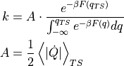
- Parameters:
CV (insgtance of child of
CollectiveVariable) – definition of the collective variable as function of the atomic coordinates of the systemCV_TS_lims (list[float]) – the lower and upper boundaries for determining whether a certain frame of the trajectory corresponds with the transition state (TS). In other words, the condition CV(R)=CV_TS is replaced by CV_TS_lims[0]<=CV(R)<=CV_TS_lims[1]
temp (float) – temperature of the simulation from which the rate factor will be computed
CV_unit (str) – the unit for printing the collective variable
- compute_rate(fep, propagator=<thermolib.error.Propagator object>, verbose=False)[source]
Combine the kinetic information of the rate factor encoded in the current instance with the thermodynamic information encoded in the free energy profile fep to obtain a rate constant according to the formula
- Parameters:
fep (
SimpleFreeEnergyProfile) – free energy profile to extract required thermodynamic free energy informationpropagator (instance of
Propagator, optional, default=Propagator(target_distribution=None)) – a Propagator used for error propagation. Can be usefull if one wants to adjust the error propagation settings (such as the number of random samples taken, or the desired distribution of the targeted error). See documentation on thePropagatorclass for more info.verbose (bool, optional, default=False) – If True, turns on verbosity
- Returns:
list of forward & backward rate constants and phenomenological free energy barriers and potentially the corresponding error distributions (if both the current instance and the fep instance have associated error distributions)
- Return type:
forward k, distribution of forward k, forward dF, distribution of forward dF, backard k, distribution of backward k, backward dF, distribution of backward dF
- finish(fn=None)[source]
Finish extracting/reading samples of the A property and optionally write all samples to a given file.
- Parameters:
fn (_tstrype_, optional, default=None) – If not None, name of file to which the A samples will be written for later reuse
- read_results(fn, A_unit='au/s')[source]
Read the samples for the A property from the given file
- Parameters:
fn (str) – file name from which to read the A samples
A_unit (str, optional, default='au/s') – unit in which the A samples were stored in the file
- result_blav(fn=None, plot=False, blocksizes=None, fitrange=[1, inf], model_function=None, plot_ylims=None, verbose=True)[source]
Store and return the error distribution of the stored A samples. Error is estimated using the block averaging (blav) method. For more details on this blav procedure as well as the meaning of the arguments blocksizes, fitrange, and model_function, see documentation of the routine
_wrap.- Parameters:
fn (str, optional, default=None) – If not None, name of file to store a plot of the block averaging procedure to
plot (bool, optional, default=False) – If True, make plot of the block averaging procedure. Is ignored if fn is not None.
plot_ylims (list or None, optional, default=None) – Limits for the y-axis in the error plot.
verbose (bool, optional, default=True) – If True, turn on verbosity of logging during this routine
- Returns:
Distribution of A samples
- Return type:
- result_bootstrapping(nboot, verbose=True)[source]
Store and return the error distribution of the stored A samples. Error is estimated using the bootstrapping method.
- Parameters:
nboot (int) – number of bootstrapping cycles
verbose (bool, optional, default=True) – If True, turn on verbosity of logging during this routine
- Returns:
Distribution of A samples
- Return type:
- class thermolib.kinetics.rate.RateFactorEquilibrium(CV, CV_TS_lims, temp, CV_unit='au')[source]
Class to compute the factor
required for the computation of the rate constant  of the process of crossing a transition state:
of the process of crossing a transition state: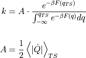
Herein, the subscript TS refers to the fact that the average has to be taken only at configurational states corresponding to the transition state (TS). Furthermore, the average contains an integral over configurational phase space as well as momenta. The integral over momenta can either be performed analytical or numerical by taking momentum samples according to a certain distribution.
When performing the momentum integration analytical, the above expression simplifies to:
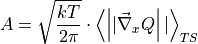
where the average is now only taken in configurational space for states corresponding to the transition state (hence still the subscript TS). Furtheremore,
 represents the gradient of the collective variable
represents the gradient of the collective variable  towards the mass-weighted cartesian coordinates.
towards the mass-weighted cartesian coordinates.When performing the momentum integral numerically, the expression for A can be rewritten as:
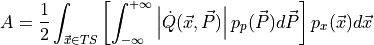
where
 indicates that the time derivative of depends on both configurational state indicated by its mass-weighted cartesian coordinates
indicates that the time derivative of depends on both configurational state indicated by its mass-weighted cartesian coordinates  as well as the mass-weighted momenta 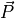. Furthermore 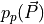 represents the momentum probability distribution which will need to be specified (eg. the Maxwell-Boltzmann distribution). The integral over is computed using the samples
as well as the mass-weighted momenta 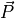. Furthermore 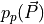 represents the momentum probability distribution which will need to be specified (eg. the Maxwell-Boltzmann distribution). The integral over is computed using the samples  taken from the MD trajectory while the integration over is computed numerically by taking random samples 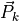 from the given momentum distribution
taken from the MD trajectory while the integration over is computed numerically by taking random samples 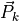 from the given momentum distribution  :
: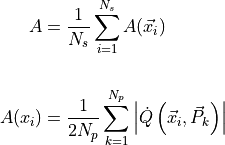
These computational methods are implemented in the
thermolib.thermodynamics.rate.RateFactorEquilibrium.proces_trajectory()routine.- Parameters:
CV (insgtance of child of
CollectiveVariable) – definition of the collective variable as function of the atomic coordinates of the systemCV_TS_lims (list[float]) – the lower and upper boundaries for determining whether a certain frame of the trajectory corresponds with the transition state (TS). In other words, the condition CV(R)=CV_TS is replaced by CV_TS_lims[0]<=CV(R)<=CV_TS_lims[1]
temp (float) – temperature of the simulation from which the rate factor will be computed
CV_unit (str) – the unit for printing the collective variable
- process_trajectory(fn_xyz, sub=slice(None, None, None), finish=True, fn_samples=None, momenta='analytical', Nmomenta=500, verbose=False)[source]
Process the given XYZ trajectory to compute and store A samples.
- Parameters:
fn_xyz (str) – filename of the trajectory from which the rate factor will be computed.
sub (slice, optional, default=(None,None,None)) – slice object to subsample the xyz trajectory. For more information see https://molmod.github.io/molmod/reference/io.html#module-molmod.io.xyz
finish (bool, optional, default=True) – when set to True, the finish routine will be called after processing the trajectory, which will finalize storing the data. If multiple trajectory from different files need to be read, set finish to False for all but the last trajectory.
fn_samples (str, optional, default=None) – write the rate factor samples (i.e. the As array) to the given file. This feature is switched off by specifying None.
momenta (string, optional, default=analytical) –
specify how to compute the momentum part of the phase space integral in computing the As samples (see description above). The following options are available:
analytical – compute the momentum integral analytically, is hence the fastest method
MB – compute the momentum integral numerical by taking random samples for the velocity from the Maxwell-Boltzmann distribution.
Nmomenta (float, optional, default=500) – the number of momentum samples taken from the given distribution in case of numerical momentum integration. This keyword is only relevant when momenta is not set to analytical.
verbose (bool, optional, default=False) – increase verbosity by setting to True.
- process_trajectory_h5(fn_h5, sub=slice(None, None, None), finish=True, fn_samples=None, momenta='analytical', Nmomenta=500, verbose=False)[source]
Process the given XYZ trajectory to compute and store A samples.
- Parameters:
fn_h5 (str) – filename of the trajectory from which the rate factor will be computed.
sub (slice, optional, default=(None,None,None)) – slice object to subsample the xyz trajectory. For more information see https://molmod.github.io/molmod/reference/io.html#module-molmod.io.xyz
finish (bool, optional, default=True) – when set to True, the finish routine will be called after processing the trajectory, which will finalize storing the data. If multiple trajectory from different files need to be read, set finish to False for all but the last trajectory.
fn_samples (str, optional, default=None) – write the rate factor samples (i.e. the As array) to the given file. This feature is switched off by specifying None.
momenta (string, optional, default=analytical) –
specify how to compute the momentum part of the phase space integral in computing the As samples (see description above). The following options are available:
analytical – compute the momentum integral analytically, is hence the fastest method
MB – compute the momentum integral numerical by taking random samples for the velocity from the Maxwell-Boltzmann distribution.
Nmomenta (float, optional, default=500) – the number of momentum samples taken from the given distribution in case of numerical momentum integration. This keyword is only relevant when momenta is not set to analytical.
verbose (bool, optional, default=False) – increase verbosity by setting to True.